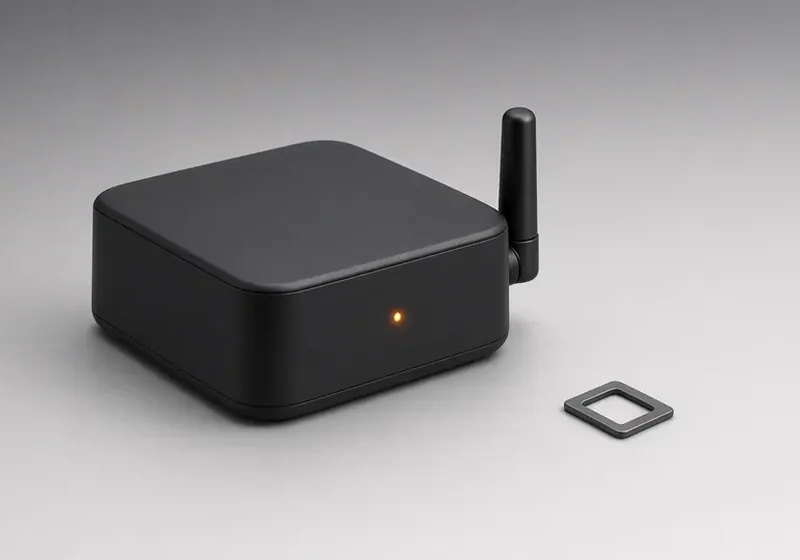
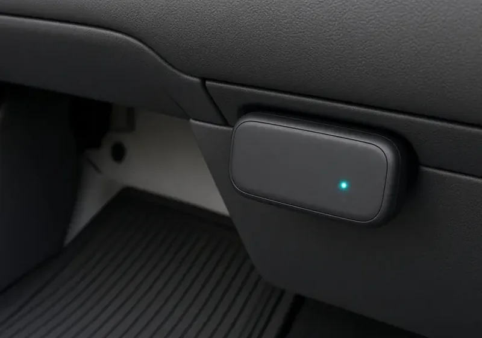

Smart Bus GPS Tracking
See every school bus live, know when it reaches each stop, and replay any trip.


Live location you can trust
The GPS device on each bus sends its position regularly to the Smart Bus platform. The transport team sees all buses on one map, and parents see their own child’s bus in the parent app. Every trip is saved, so you can replay a route when a parent raises a question.
Live map
All buses on one screen with status and last update.
Stop alerts
Notifications as the bus approaches and reaches stops.
ETA
Estimated arrival so parents wait less at the stop.
Route history
Replay any day’s trip with time stamps.
Speed monitoring
See speed on the map and in trip reports.
Device health
Know when a device is offline so it can be fixed fast.
Devices designed to meet AIS 140 standards
Our vehicle tracking devices are designed to meet AIS 140 standards. Our team will help you choose the right device for your buses and explain installation and connectivity.
Explore more Smart Bus features
See Smart Bus in action
Book a free demo for your school. No obligation.
Frequently asked questions
How accurate is smart bus GPS tracking?
GPS accuracy depends on signal conditions, but in normal conditions the bus position is shown clearly on the road and updated regularly.
Can the school see past trips?
Yes. Route history lets you replay trips with time stamps for any day that is stored.
Do parents see all buses?
No. Parents only see the bus assigned to their child, as set by the school.